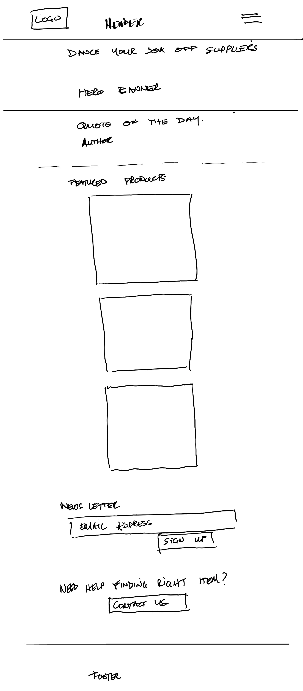
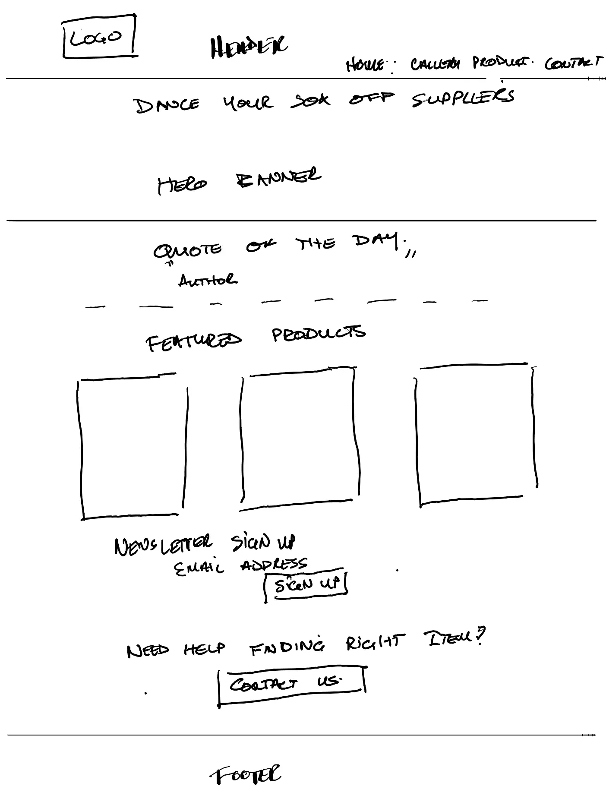

Site Name
Dance Your Sox Off Suppliers – The name reflects the company's origins as a supplier of specialized dance socks while also representing the broader range of dancewear products available through the business. The name is a play on the the origins of the company's first product.
Site Purpose
The site provides a hub for dancers, studios, and event organizers to explore available products, learn about supplier services, and place inquiries or orders. It will also share resources such as costume care tips and event highlights.
- Product catalogs and featured collections
- Information about dance shoes, leotards, and accessories
- Dynamically loaded featured products
- Interactive image galleries
- Inspirational Quote of the Day API integration
Scenarios
- What dance shoes are available?
- Can I find further information about the products?
- How do I know if I am getting the right size or style?
- How do I contact the supplier for questions or orders?
- Can I find other information about dance classes and events?
Color Scheme
- Silver (#C0C0C0) – Headings, Navigation bar, Section accents.
- Dark Gray (#555555) – Headers and Footer, Text accents, Borders and contrast Elements.
- Pink (#b78f9c) – Buttons, Call‑to‑action, Featured highlights.
- White (#FFFFFF) – Background, Text, Clean and open feel.
Typography
- Montserrat – Main headings, Navigation links, Buttons.
- Open Sans – Body content, Lists, Form text.
- Dancing Script – Logo elements, Gallery captions, Special promotions.
Wireframes
Mobile View

Logo + hamburger menu, hero banner, stacked product highlights, contact form at bottom.
Desktop View

Logo + horizontal nav bar, full‑width hero banner, product catalog grid (3–4 columns), footer with contact form and resources.